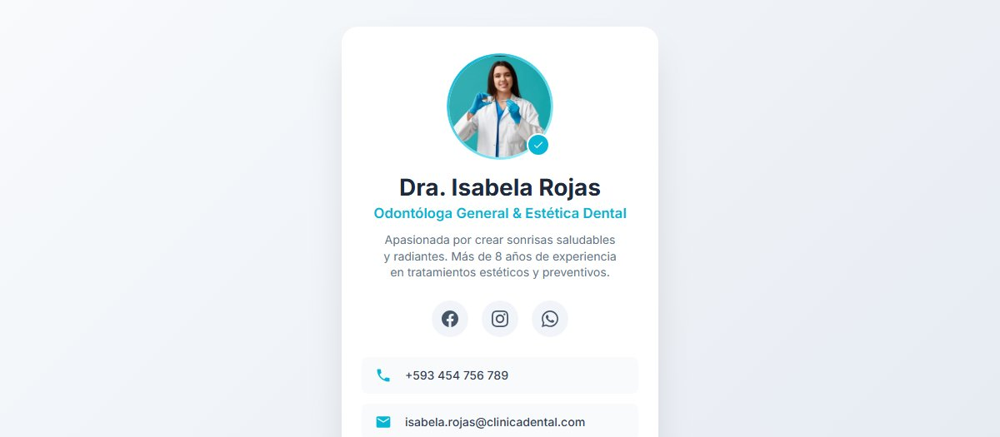

Tarjetas digitales: cómo elegir entre la Mini Web Básica y la Pro
Comparativa de los tres planes para saber cuál encaja con tu negocio.

Tener Instagram para tu negocio es una buena idea. Es gratis, es donde está tu público y te permite mostrar lo que haces. El problema aparece cuando el perfil es toda tu presencia digital: no tienes nada propio, y todo lo que construiste vive dentro de una plataforma que no controlas.
Piensa en lo que pasa en una cuenta normal: un día cambian el orden del feed y tus publicaciones dejan de verse; otro día te hackean o te restringen por error; y si el cliente entra, ve tu última foto, pero no encuentra tu dirección, tus precios ni un botón claro para escribirte. Ahí se pierde el contacto.
Una tarjeta de presentación digital es una página pequeña, pensada para el celular, con un solo objetivo: que quien la abra te contacte. No es "un link más en la biografía", tiene cosas que el perfil no puede darte:
Para ser honestos: no se trata de elegir uno u otro. Instagram sirve para que te descubran, para mostrar el día a día y para la conversación pública. La tarjeta digital sirve para que el cliente que ya te encontró pase a la acción sin buscar entre cien publicaciones.
Lo que nosotros recomendamos es poner la tarjeta en tu biografía de Instagram. Así el perfil sigue haciendo lo suyo y el enlace hace el trabajo de convertir.
Estos son los planes reales, con lo que trae cada uno. Vale la pena leerlos completos, porque la diferencia entre uno y otro a veces decide justo el problema que quieres resolver:
Cuéntanos a qué se dedica tu negocio y te decimos cuál encaja. Sin compromiso.
Los tres planes son de pago único y el dominio del primer año va incluido en las tarjetas. No hay cobros recurrentes ni sorpresas después de la entrega: pagas tu tarjeta una vez y la usas.
Si quieres ver la comparativa a fondo, con el detalle de para quién es cada plan, está en tarjetas digitales: cómo elegir entre Mini Web Básica y Pro.
Nos envías tu logo, tus servicios, tus precios y tus datos de contacto. Diseñamos la tarjeta, la publicamos y te entregamos el enlace más el código QR listo para imprimir. En 24–48 horas hábiles tienes tu tarjeta funcionando.
El detalle del servicio está en la página de tarjetas digitales.
Comparativa de los tres planes para saber cuál encaja con tu negocio.
La diferencia entre un QR fijo y uno editable, y cuándo vale la pena cada uno.
Los precios reales de cada servicio, sin letra pequeña.